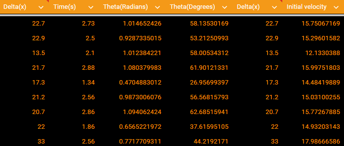

Galileo, Victoria, Alyona, Jackson
9-12-24
(graphics are a work in progress)
In this lab we attempted to increase our understanding of projectile motion by trying to find the optimal launch angle for projectiles. We did this by throwing pumpkins and using their change in height and displacement as well as time to find their launch angle. The launch angle was then correlated to the displacement of the pumpkin in order to find which angle went the furthest. We hypothesized that the optimal launch angle would be 45 degrees because it would have equal x and y velocity.
The equation we used to find launch angle was theta = arctan(-g(t^2)/2Δx)
After Pumpkin some Chunkin we found the following results using theta = arctan(-g(t^2)/2Δx) and calculating velocity initial with vo=Δx/cosΘt. It is important to note that Delta(x) is in meters

Despite some inconsistencies, the data, especially the trendline shows that just around the middle(45 degrees) is the relative maximum for delta x and both increasing and decreasing that minimizes the displacement.
Our thrower, although pretty consistent for a person, did not have identical initial velocities per throw, which meant that it was harder to judge whether a far throw was due to angle or high initial velocity. This could be fixed with a throwing apparatus like one of the ones they use for tennis. Another issue was that throws did not perfectly start at y = 0, affecting the calculations. This could be fixed by accounting for the change in height in our calculations, or by digging a small hole for the aforementioned throwing apparatus to have its throw set at y = 0. Lastly, there was likely a difference between the actual distance and measured time to ours due to limitations of reaction time and our measuring device. This could be fixed by exponentially more rigorous methods of measuring based off of how exact we want to get. The percent error is calculated by % Error = |actual-expected|/actual x 100% and ours resulted in 2.22% = |45-44|/45 x 100%. This is because our greatest throw was at 44 degrees and the actual ideal throwing angle is 45 degrees.
In conclusion, the furthest throw was almost 45 degrees, coming in at a solid 44. Although this throw also had a higher initial velocity, it matched our hypothesis that the furthest throw would be that at a 45 degree angle. The ability to maximise distance for angle has many real world applications, from playing a sport and wanting to throw as far as possible. If I were to explain why 45 degrees is the optimal angle, I would hypothesize that it is because the x and y velocities are the same initially, maximizing time in the air along with x velocity to increase distance.